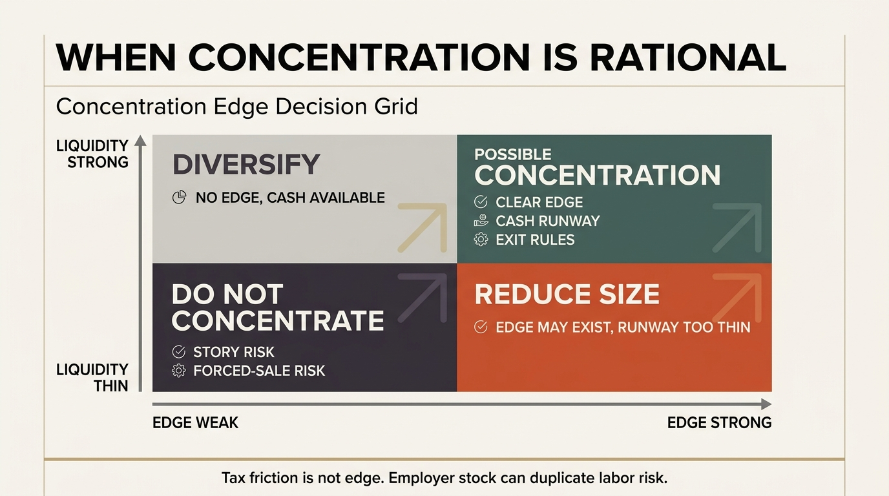

The Concentration vs Diversification Tradeoff
Many households arrive at concentration without ever choosing it cleanly. A career is tied to one sector, deferred compensation piles into one company, housing anchors the family to one local economy, and the brokerage account adds a few more familiar names on top. The real tradeoff is not theory versus bravado. It is breadth versus edge. Diversification protects against being wrong. Concentration only justifies itself when being narrow reflects a real advantage rather than accumulated overlap.
That distinction is often blurred because concentration can mean very different things. A founder whose wealth sits in one operating company is concentrated because control and information are tied to ownership. An employee overloaded with employer stock is concentrated for a less flattering reason: compensation design and tax inertia. A household that runs a broad index core plus a small set of high-conviction positions is concentrated only at the margin. These situations do not belong in the same bucket, yet they are often discussed as if they were one behavioral problem. Once labor income, tax constraints, and housing exposure are added, the household version of concentration is often wider and riskier than the brokerage statement suggests.
Core thesis: diversification should remain the base case for most households because the average investor does not have a repeatable stock-selection edge and usually cannot afford large idiosyncratic drawdowns. Concentration can be rational, but only when four conditions line up: the investor has an identifiable edge, concentration does not duplicate human-capital risk, liquidity reserves are strong enough to absorb being early or wrong, and the position can be governed with explicit exit rules.

Why Diversification Still Deserves Default Status
Modern portfolio logic starts from an unglamorous fact: most individual positions carry idiosyncratic risk that is not compensated in a simple way. Diversification spreads that risk across many exposures so the household keeps more of the market signal and less of the single-name accident risk. For households building financial resilience rather than running a professional strategy, that remains a strong baseline because one permanent impairment can reset years of saving.
The household evidence mostly supports this default. Work by Calvet, Campbell, and Sodini on Swedish administrative data found that while a few households make large diversification mistakes, most of the welfare cost of underdiversification is modest only because many households are already reasonably diversified relative to their opportunity set. The implication is not that concentration is harmless. It is that many investors intuitively drift toward enough diversification to avoid catastrophic efficiency loss. Once they move far away from that baseline, the tail risk becomes household-sized rather than merely statistical.
Another point matters for real planning. Diversification is not only about return efficiency. It is about survivability. A diversified portfolio is easier to rebalance, easier to spend from, easier to tax-manage, and less likely to force a life decision around one bad earnings report, one regulatory change, or one funding freeze. Wealth planning is not performed inside a spreadsheet alone. It sits inside careers, mortgages, family obligations, and uneven cash-flow timing.
Why Concentration Persists
Concentration persists because some assets are not merely securities. They are businesses, control rights, information channels, or career engines. Founders often need concentrated ownership to preserve incentives and strategic direction. Private-company operators may rationally prefer concentrated exposure because the source of value is their own governance quality. Employees in niche sectors may also believe they know their industry or firm better than a broad market index does. Those arguments are not always false.
The best empirical case for concentration is therefore conditional, not universal. Ivkovic, Sialm, and Weisbenner found that households with concentrated stock portfolios, especially larger and more locally informed ones, often bought stocks that outperformed those bought by more diversified households. But the same paper also found that concentrated stock portfolios carried higher total risk and lower Sharpe ratios. That is the key asymmetry. Some concentrated investors probably do have information or analytical advantages. Even then, the path is rougher and the risk-adjusted payoff is not obviously superior.
Recent asset-pricing work makes a similar point from the theory side. Underdiversification can be privately rational when concentrated ownership creates control benefits or supports managerial effort. But what is optimal for a control-seeking owner is not automatically optimal for a household trying to preserve flexibility and avoid ruin. A founder's concentration logic should not be copied by a salaried household whose future labor income already depends on the same sector shock.
The Most Common Error Is Hidden Double Concentration
The dangerous version of concentration is not a deliberate thesis. It is overlap. A household may work in one sector, own employer equity, buy nearby real estate, and still tell itself it is diversified because brokerage holdings include several tickers. In reality the family has stacked labor income risk, equity risk, and local economic risk on the same macro driver. This is one reason the concentration question belongs inside total household architecture rather than inside the brokerage account alone.
Behavioral work strengthens that warning. Dimmock, Kouwenberg, Mitchell, and Peijnenburg linked portfolio underdiversification to probability weighting and a taste for positively skewed outcomes. In plain terms, some households hold narrow portfolios not because they have superior information but because they overvalue low-probability upside. That is not an edge. It is lottery logic wearing analytical language.
This is where diversification becomes a decision-quality tool rather than a slogan. It forces the investor to admit how much of the thesis is actually insight, how much is tax friction, how much is emotional attachment, and how much is simple inertia. A concentrated position that survives that audit may still be valid. Many do not.

A Better Decision Framework
- Start with the whole balance sheet. Count labor income, deferred compensation, business ownership, housing exposure, and geography before deciding whether the portfolio is already narrow.
- Define the source of edge explicitly. Edge can come from control, underwriting access, sector expertise, or superior information processing. If the thesis cannot name the edge, it is probably narrative rather than edge.
- Size concentration against runway. A concentrated investor needs enough liquid reserves to avoid forced selling during drawdowns or temporary dislocation.
- Separate tax friction from conviction. Many concentrated positions survive only because selling is psychologically painful or tax-costly. That is a constraint, not proof of expected outperformance.
- Pre-commit the exit logic. If concentration is justified by a specific edge, the investor should know what evidence would show the edge has weakened or disappeared.
This framework usually leads to one of two conclusions. For most households, broad diversification should dominate because financial capital must stabilize life rather than behave like a venture bet. For a narrower set of investors, concentration belongs in a capped satellite allocation or in a business-ownership bucket that is consciously offset elsewhere. The common failure is not choosing one side. It is pretending to hold one while accidentally living the other.
Known, Inferred, And Unknown
| Category | Assessment |
|---|---|
| Known | Some concentrated individual investors do outperform more diversified peers on raw return measures, which is consistent with the possibility of real information or skill advantages. |
| Known | Concentrated portfolios usually carry higher total risk and often weaker risk-adjusted performance, especially when concentration reflects behavioral preference rather than genuine edge. |
| Known | Household underdiversification is associated with probability weighting and preferences for positively skewed payoffs. |
| Inferred | The practical household question is less about maximizing expected return in isolation and more about preventing one thesis from controlling job flexibility, spending stability, and long-horizon compounding. |
| Unknown | How many self-identified concentrated investors truly possess a durable edge once taxes, liquidity constraints, and human-capital overlap are measured together. |
The Practical Bottom Line
Concentration is not automatically reckless and diversification is not automatically timid. Each is a different answer to a different problem. Diversification is the answer to uncertain skill and low ruin tolerance. Concentration is the answer to a narrow set of situations where the investor believes they can convert superior information, control, or structural access into higher expected payoff. The burden of proof belongs on concentration, not on diversification.
That is why the healthiest household default is a diversified core plus explicit rules for any narrow exposure that survives scrutiny. The point is not to ban conviction. It is to stop vague conviction from quietly running the entire balance sheet. Wealth durability comes from surviving mistakes, not only from being right. Diversification remains the cleaner way to buy that survival margin.
Further Reading Inside The Site
This article connects directly to The Liquidity Illusion, The Asset-Rich, Cash-Poor Paradox, and The Compounding Gap. Those pieces frame why concentration questions cannot be separated from liquidity, scale, and the household's actual ability to stay invested.
Source List
Ivkovic Z, Sialm C, Weisbenner S. Portfolio Concentration and the Performance of Individual Investors. NBER Working Paper 10675. 2004.
Calvet LE, Campbell JY, Sodini P. Down or Out: Assessing the Welfare Costs of Household Investment Mistakes. NBER Working Paper 12030. 2006.
Dimmock SG, Kouwenberg R, Mitchell OS, Peijnenburg K. Household Portfolio Underdiversification and Probability Weighting: Evidence from the Field. NBER Working Paper 24928. 2018.
Elenev V, Landvoigt T. Asset Pricing with Optimal Under-Diversification. NBER Working Paper 31121. 2023.
Calvet LE, Campbell JY, Sodini P. Fight or Flight? Portfolio Rebalancing by Individual Investors. NBER Working Paper 14177. 2008.